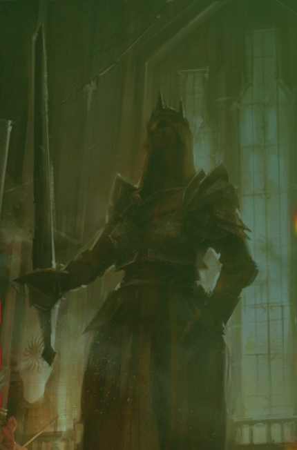
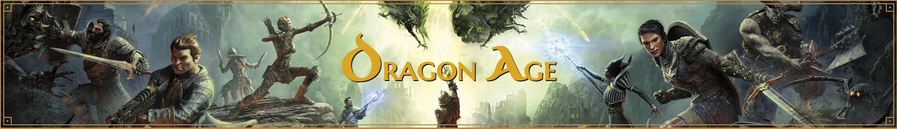

Website inspried by game.
It was my first major project worth mentioning. It was created at the very beginning of my Easy Code course. The website was intended for fans of the game universe. The world contained in this universe, as well as the characters, influenced the person I am today. Humble, tolerant and kind.
The title page features the Dragon Age lore. The website also includes the user interface, game graphics, and in-game literature. The most I am proud of is the account subpage. It looks very neat, the background picture is covered with a gradient. The colors synchronize perfectly with the title photo and the inputs. Buttons looks amazing with custom icons.
When it comes to the subpage with in-game literature, the graphics placed next to the poems from the game are the most impressive. The text is styled and divided into sections, it also impresses with its aesthetics. Personally, I like the Elvish section the most. The website is full of flexes as at that time I only knew this way of arranging elements on the page as I wanted. Even if I would now make this website differently in terms of code. Despite this, the website still makes a great impression on me and makes me feel amazing. It also shows how much I've developed since then.